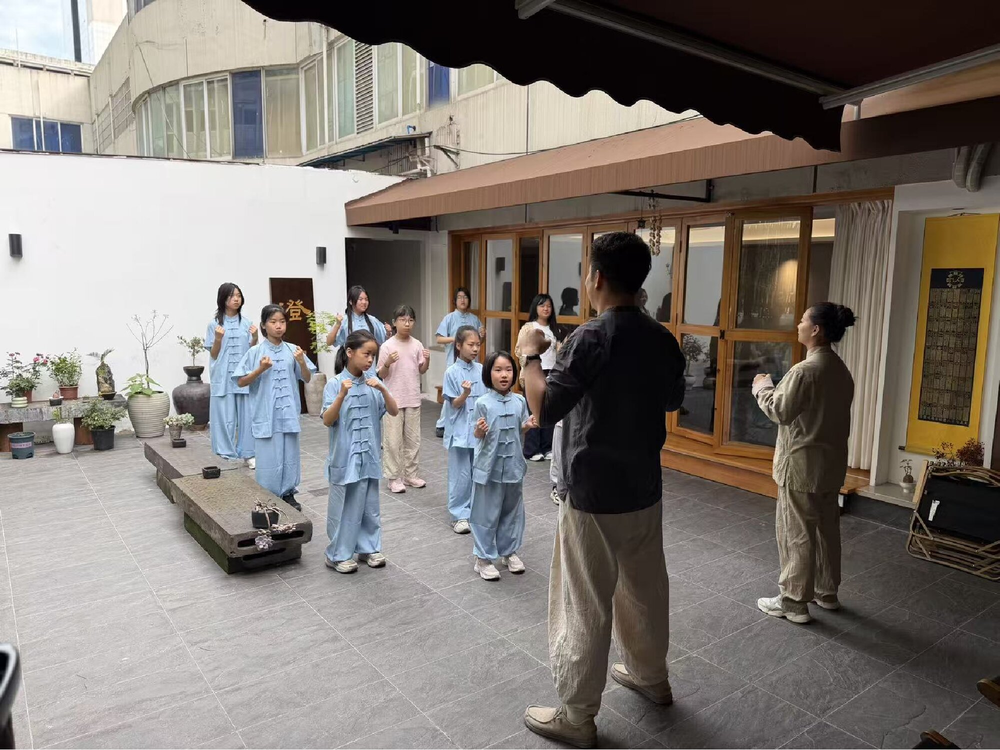
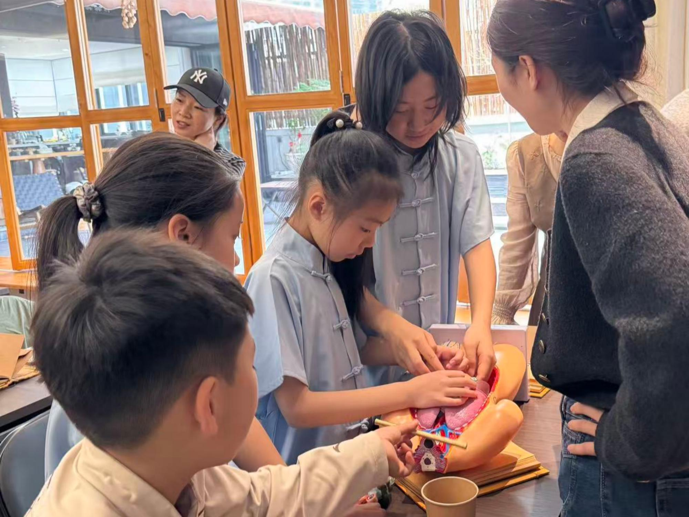

稚子启蒙，初窥岐黄之道。尔意堂“小小中医班”首课在一片专注与好奇中圆满完成。孩子们从认识身体开始，学习拍八虚八会之法，在轻松的互动中渐识五脏之理，感受中华医道蕴含的生活智慧。
中医并不只存在于古籍与诊室，也存在于每个人对四时变化、饮食起居和身体感受的观察之中。对孩子而言，一堂中医启蒙课的意义，不在于记住多少复杂概念，而在于种下一颗理解身体、珍惜健康的种子。
从身体出发，认识古老智慧
课堂从孩子们最熟悉的身体部位开始。老师用浅显的语言介绍日常生活中的养护方法，并带领大家体验简单、适宜的动作。孩子们通过观察、提问和亲手实践，把抽象的中医概念转化为能够感受到的经验。
少年乃古文化传承之希望。自幼启学中医之道，既可涵养身心，亦能在日常生活中建立守护健康的意识。
拍八虚是本次课堂的重要体验内容之一。老师在示范过程中反复强调动作应轻缓、适度，帮助孩子们理解：养生并非追求强烈刺激，而是学会耐心地倾听身体、顺应身体。

让传承成为可感知的日常
传统文化的延续，需要真实的接触和持续的兴趣。尔意堂希望以体验课、非遗讲座和医馆开放活动等方式，为不同年龄的人提供理解中医文化的入口。
一枚银针、一味草药、一段关于四季作息的讲解，都是中医文化与当代生活相遇的媒介。当孩子愿意主动观察身体变化、理解规律生活的重要性时，传承就不再是遥远的概念。
首课内容回顾
本次课程围绕认识五脏、体验拍八虚、了解日常作息与健康习惯展开。课程采用讲解与互动相结合的方式，使孩子们在轻松氛围中建立对中医文化的初步认识。
愿非遗薪火相传，古医之道在童蒙之心绵延。后续课程及开放活动信息，将通过尔意堂医馆资讯持续发布。